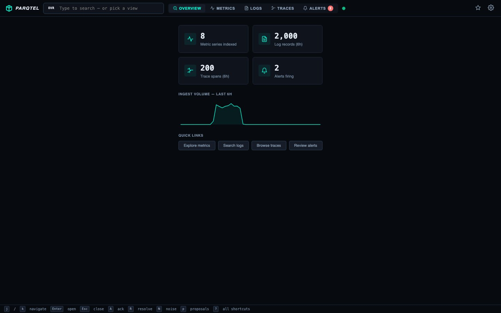

10k/s
Sustained ingest benchmarked on a 10M-sample dataset, zero errors
10M
Sample corpus ingested — metrics, logs & traces combined
12.7ms
Instant query p50 — p99 range query just 160ms
~15MB
Single static binary, distroless image — edge-ready

CLICK TO ENLARGERuntime architecture — single binary, zero external deps
OTLP Ingest
OTel SDKs
gRPC 4317 · HTTP
Collectors
metrics · logs · traces
Edge fleets
ARM · low footprint
Parqtel Server (Axum)
parqtel-core
query · pipelines · alerting · retention
Parquet + Zstd
columnar · 10–20× compression
Surfaces
Built-in web UI
air-gap ready · 42 KB
Grafana datasource
Prom API v1 · SimpleJSON
Alert engine
state machine · noise score
7 MCP servers
Slack · PagerDuty · Jira · Notion…
Columnar economics
Parquet + Zstd with block compaction and retention-as-code — 10–20× cheaper long-term telemetry storage than TSDB, with drop-in dashboards.
PromQL compatibility
Existing Grafana dashboards work unmodified — instant & range queries, aggregations, recording rules, span-metrics (RED) auto-derived from traces.
Supply-chain hardened
Distroless ~15MB image, cosign-signed releases, Trivy + CodeQL, SBOM, OpenSSF Scorecard — and zero unsafe Rust at compile time.
AI-native operations
Seven MCP tool-servers (Slack, PagerDuty, Jira, Notion, Discord, GDocs, Parqtel) give LLM agents governed telemetry access for automated RCA.